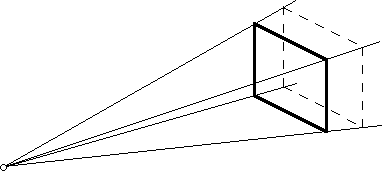
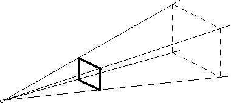

Previous
-- Next
VIEW PLANE AND VIEW VOLUME
- The View Plane (or Projection Plane) captures the projected image.
- The view plane has a limited extension (in u and v direction).
- The center of projection and the view plane define a semi-infinite pyramid called the 'view volume'. Only objects that are inside the view volume are visible and are projected onto the view plane.

- The size of the view plane and its relation to the center of projection determines the field of view (FOV). In immersive VR, the FOV of the synthetic camera matches the FOV of the display system in use (e.g., HMD).
- Changing the field of view:
- moving view plane closer to center of projection increases the FOV and vice versa.
- reducing size of view plane decreases FOV and vice versa.



- The view plane is mapped to the monitor/screen where its content is finally
produced (rendered).
Previous
-- Next